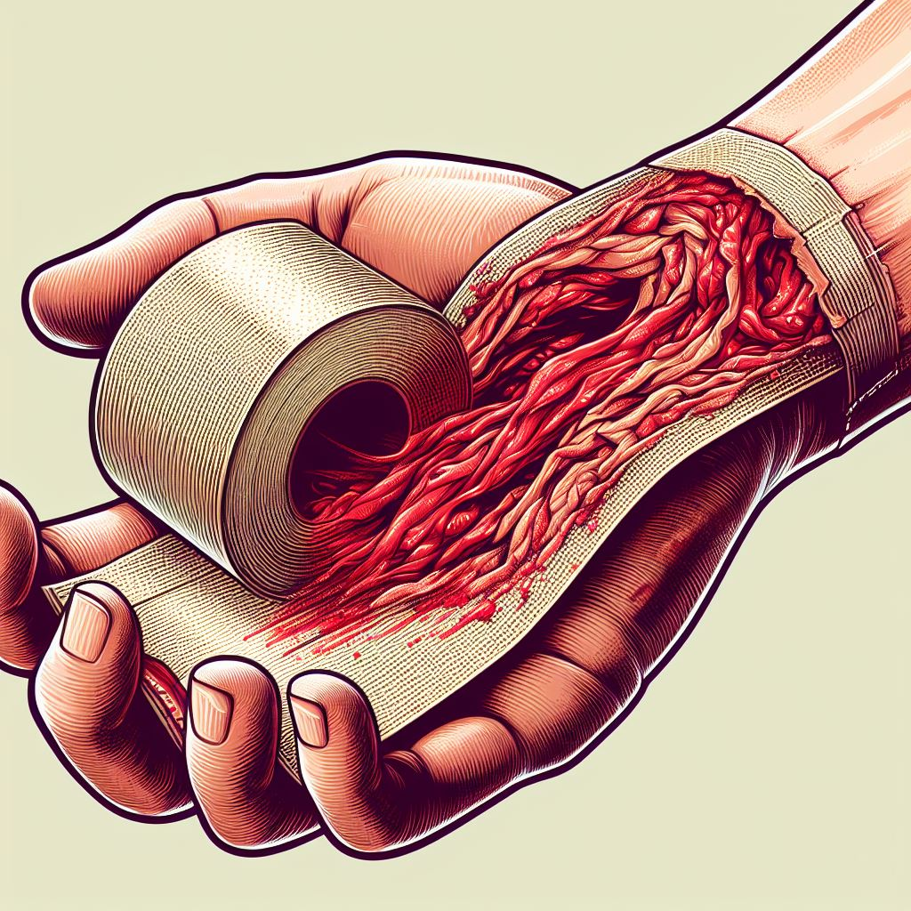

(Deep) Flesh Wound

Stop the bleeding before anything else.
Apply pressure to the area using a clean and dry absorbent material – such as a bandage, towel or
handkerchief – for several minutes.
If the cut is to your hand or arm, raise it above your head to help reduce the flow of blood.
If the injury is to a lower limb, lie down and raise the affected area above the level of your heart.